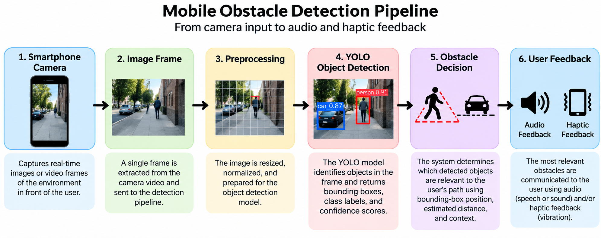

Overview of the Detection Pipeline
A mobile obstacle detection system usually follows a sequence of steps. The smartphone first captures an image or video frame. That visual input is then processed by a computer vision model, which searches for objects that may be important for navigation.
After objects are detected, the system must determine whether they are actually relevant to the user's movement. If an object is considered important, the system can communicate a warning through audio, vibration, or another feedback method [1] [6].
Step 1: Camera Input
The process begins with the smartphone camera. The camera captures images or video frames from the environment in front of the user. These frames become the visual input for the computer vision system.
Smartphone-based systems have been used in previous research because the phone provides the camera and processing hardware in a portable device [2].
Step 2: Image Preprocessing
Before the image is sent to the object detection model, it may be resized or converted into the format required by the model. This step is called preprocessing.
Resizing is important on mobile devices because larger images require more computation. Research using YOLOv8 on Android demonstrates the trade-off between input resolution, inference speed, and detection performance [3].
Step 3: Object Detection
The processed frame is passed into an object detector such as YOLO. The detector analyzes the image and produces information about the objects it finds.
A detection usually includes:
- An object class, such as person, bicycle, or car
- A bounding box showing the object's location
- A confidence score describing the certainty of the detection
YOLO-based object detectors have been used in multiple assistive navigation systems [1] [2] [4].
Step 4: Determine Whether the Object Is an Obstacle
This is one of the most important steps. A detected object is not automatically an obstacle.
For example, the camera might detect several people, cars, or other objects, but only one of them may actually be located in the user's walking path.
Systems can use additional information such as bounding-box position, object size, depth estimates, motion, or the direction of the user's movement to decide which objects are most important [5] [6].
Step 5: Generate User Feedback
Once the system decides that an object represents a possible obstacle, the information must be communicated to the user.
One option is auditory feedback. The phone can use speech or sound to describe the detected obstacle. Another option is haptic feedback, where the phone uses vibration patterns to provide a warning.
The 2025 mobile obstacle detection system by Bastidas-Guacho and colleagues uses both auditory and haptic feedback [1].
Step 6: Repeat the Process
Because the user and surrounding objects may be moving, obstacle detection cannot happen only once. The system must continuously capture new frames, process them, detect objects, evaluate their importance, and update the feedback given to the user.
Some approaches also analyze information across consecutive frames. For example, motion-based methods can use optical flow and feature tracking to better understand how the scene changes while the user moves [5].
Complete System Flow
A simplified pipeline can be represented as:

Figure 1. Mobile obstacle detection pipeline showing camera input, preprocessing, YOLO object detection, obstacle decision, and audio or haptic feedback. Diagram created for this tutorial.
This pipeline shows why obstacle detection is more than running an object detection model. The detector identifies objects, but the complete system must also determine which detections matter and communicate the result quickly enough to be useful.